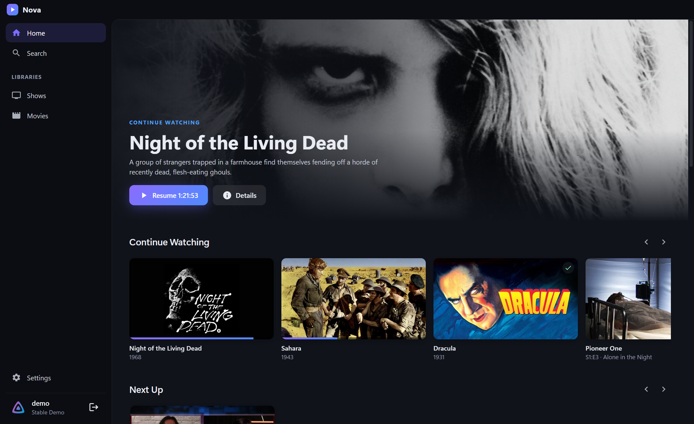
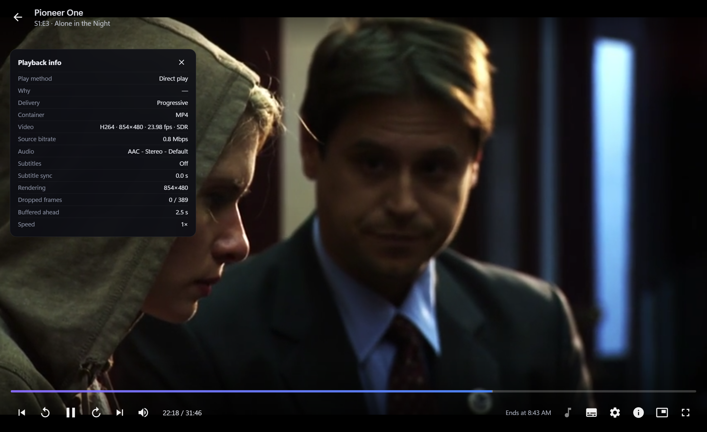
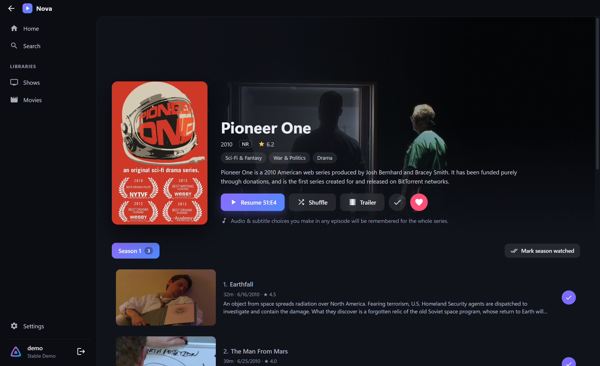
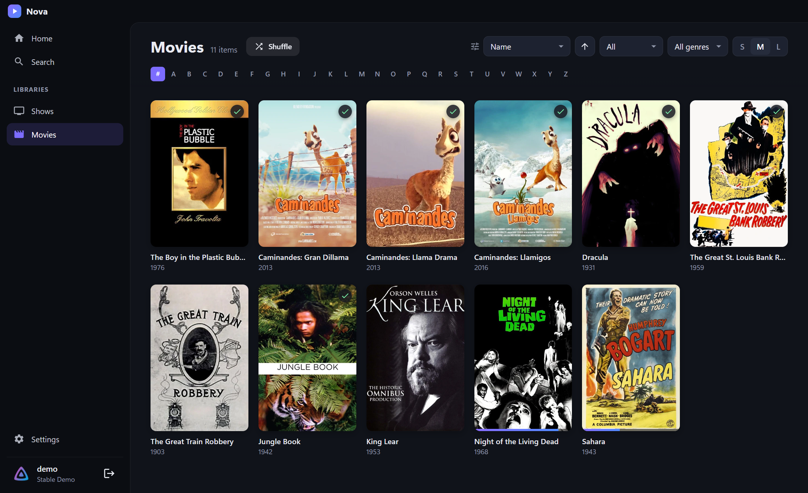

Nova is a fast, modern desktop client for your Jellyfin server. It doesn't freeze when you press Play, it remembers how you sort every library, and it keeps your audio and subtitle choices for the whole series.

These are the most common complaints about Jellyfin Media Player, each one fixed.
The player opens instantly. Every server request runs in the background with a timeout, and you can always back out while it loads. If your PC can't play a file directly, Nova switches to server transcoding on its own instead of hanging.
Each library remembers its own sort, order, filter, genre and card size, even after a restart. Going back keeps your exact scroll position, and big libraries get an A–Z jump bar.
Pick Japanese audio and English subtitles once, and every episode follows. Nova matches tracks by language, title, forced/SDH and commentary, not by position, so it still works when episodes order their tracks differently.



Plus a few things you've probably wished Jellyfin had.
Everything in the player is one key away.
Free, open source, and it updates itself.
Windows may show "Windows protected your PC" the first time. Click More info → Run anyway (the app isn't code-signed).